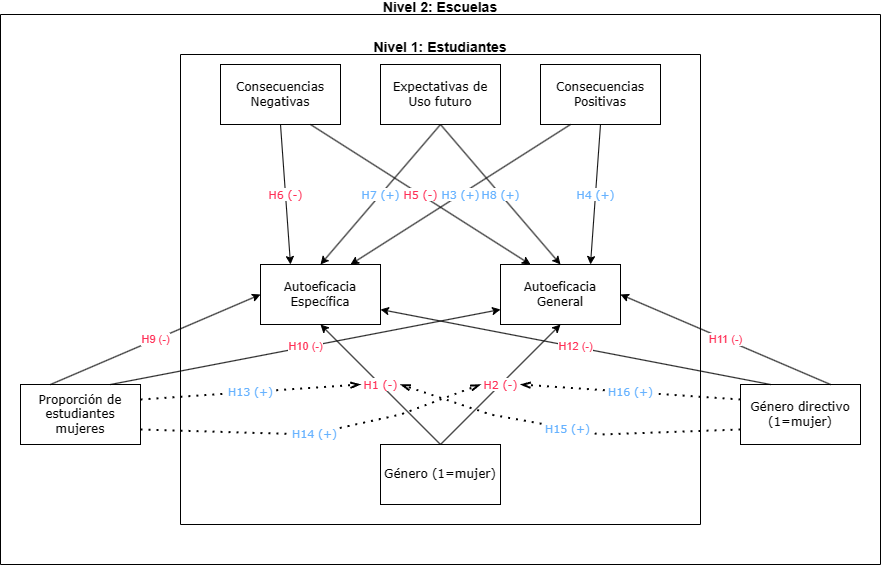

| Resumen descriptivo de variables | ||||||
| Variable | Media/Prop | Sd | P25 | P75 | Hist | Missing1 |
|---|---|---|---|---|---|---|
| Nivel 1: Estudiantes (N=3092) | ||||||
| Sexo estudiante (1=mujer) | 0.51 | 0% | ||||
| Autoeficacia Específica | 51.27 | 9.31 | 47.08 | 55.25 | ▁▂▇▃▁ | 3.1% |
| Autoeficacia General | 51.73 | 8.87 | 45.23 | 61.12 | ▁▁▂▃▇ | 3.01% |
| s_speceff2 | 2.04 | 0.52 | 1.75 | 2.25 | ▃▆▆▇▃ | 7.6% |
| Nivel educacional parental (1=profesional) | 0.34 | 1.13% | ||||
| Nivel alfabetización del hogar | 1.47 | 1.23 | 0.00 | 2.00 | ▆▇▆▃▂ | 0.78% |
| s_hisei | 47.80 | 19.68 | 33.00 | 66.00 | ▃▇▅▆▂ | 5.76% |
| s_nisb | 0.20 | 1.18 | -0.77 | 1.23 | ▂▇▇▆▅ | 0.78% |
| Nivel 2: Colegios (N=178) | ||||||
| Proporción femenina de estudiantes | 0.50 | 0.18 | 0.42 | 0.58 | ▁▃▇▂▁ | 0% |
| Género directivo (1=mujer) | 0.53 | 1.69% | ||||
| 1 Nota: Las cifras de 'Missing' se presentan como porcentajes del total de observaciones. | ||||||
Más allá del desempeño:
Brechas de autoeficacia tecnológica y composición de género en contextos escolares chilenos
Juan Carlos Castillo, Daniel Miranda, Teresa Correa y Nicolás Tobar
Nucleo Mileno de Desigualdades y Oportunidades Digitales
nudos.cl
Conferencia COES, Noviembre 2023


Introducción
Masificación TICS y diferencias de uso por género (Hargittai & Shafer, 2006; Punter et al., 2017).
Autoeficacia: “a functional self-awareness in which students reflect on their personal efficacy, thoughts, actions, the meaning of their pursuits, and make corrective adjustments if necessary” (Bandura, 2006)
Relevancia de las expectativas de autoeficacia en la agencia individual (Ryan & Deci, 2000).
Identidad, grupos y estereotipos
Teorías de grupos de referencia y amenaza del esterotipo (Steele & Aronson, 1995; Turner, 2004).
Evidencia de refuerzo parental y estudiantil del estereotipo de género en relación a tecnologías (Vekiri & Chronaki, 2008).
Efectos composición: mujeres aumentan rendimiento y satisfacción cuando están rodeadas de mujeres (Kirsch, 2018).
¿Cómo la composición de género del establecimiento y las percepciones de las tecnologías afectan las expectativas de autoeficacia sobre las tecnologías de los hombres y las mujeres estudiantes de octavo básico en Chile?
Datos ICILS
- Medición en noviembre 2017, Publicación 2018.
- 46.561 estudiantes 8vo básico de 2226 colegios alrededor de 12 países.
- 3092 estudiantes y 178 escuelas en Chile.
- Muestra compleja trietápica.
- Test CIL y cuestionario sobre acceso, uso, percepciones y actitudes a las TIC.
Autoeficacia
¿En qué medida puedes realizar cada una de estas tareas utilizando las TIC?
Respuestas: 1. Muy de acuerdo. 2. De acuerdo. 3. En desacuerdo. 4. Muy en desacuerdo.
General
- Editar fotografías digitales u otras imágenes gráficas.
- Escribir o editar texto para un trabajo escolar.
- Buscar y encontrar en Internet información relevante para un proyecto escolar.
- Crear una presentación multimedia (con sonido, imágenes o vídeo).
- Cargar texto, imágenes o vídeo en un perfil en línea.
- Insertar una imagen en un documento o mensaje.
- Instalar un programa o [app].
- Juzgar si puede confiar en la información que encuentra en Internet.
Específica
- Crear una base de datos (por ejemplo, utilizando [Microsoft Access®]).
- Construir o editar una página web.
- Crear un programa informático, macro o [app] (por ejemplo, en [Basic, Visual Basic]).
- Configurar una red de área local de ordenadores u otras TIC.

Género, autoeficacia y consecuencias sociales
Modelo Multinivel
| Autoeficacia General | Autoeficacia Específica | |
| Predictors | Estimates | Estimates |
| Proporción Femenina | 1.29 (1.19) |
0.13 (1.30) |
| Género directivo(mujer=1) | 0.39 (0.40) |
-0.26 (0.44) |
| Género Estudiante(mujer=1) |
1.34 *** (0.34) |
-0.67 (0.35) |
| Expectativa uso futuro | 0.09 *** (0.02) |
0.23 *** (0.02) |
| Percepción de consecuencias positivas |
0.15 *** (0.02) |
0.10 *** (0.02) |
| Percepción de consecuencias negativas |
0.06 *** (0.02) |
0.04 * (0.02) |
| Marginal R2 / Conditional R2 | 0.099 / 0.134 | 0.103 / 0.147 |
| * p<0.05 ** p<0.01 *** p<0.001 | ||
Moderación
| Autoeficacia General | Autoeficacia Específica | |
|---|---|---|
| Predictors | Estimates | Estimates |
| s_sex:c_s_f_ratio | 1.67 (2.30) |
-5.57 * (2.40) |
| s_sex:c_p_sex | 0.30 (0.66) |
0.77 (0.67) |
| Random Effects | ||
| σ2 | 66.68 | 72.96 |
| τ00 | 4.01 idschool | 3.06 idschool |
| τ11 | 0.92 idschool.s_sex | 0.15 idschool.s_sex |
| ρ01 | -0.79 idschool | 1.00 idschool |
| N | 175 idschool | 175 idschool |
| Observations | 2810 | 2808 |
| Marginal R2 / Conditional R2 | 0.099 / 0.137 | 0.106 / 0.150 |
| * p<0.05 ** p<0.01 *** p<0.001 | ||
¿Es relevante la composición de género?
Autoeficacia Específica
Verificación Hipótesis
Conclusiones
Work in progress
Limitaciones:
- causalidad
- disponibilidad variables ICILS para investigación social
Proyecciones
- comparación temporal 2013-2018-2023
- incluir prueba de desempeño como predictor
- comparación internacional
Referencias
Bandura, A. (2006). Toward a Psychology of Human Agency. Perspectives on Psychological Science, 1(2), 164–180. https://doi.org/10.1111/j.1745-6916.2006.00011.x
Hargittai, E., & Shafer, S. (2006). Differences in Actual and Perceived Online Skills: The Role of Gender. Social Science Quarterly, 87(2), 432–448. https://doi.org/10.1111/j.1540-6237.2006.00389.x
Kirsch, A. (2018). The gender composition of corporate boards: A review and research agenda. The Leadership Quarterly, 29(2), 346–364. https://doi.org/10.1016/j.leaqua.2017.06.001
Punter, R. A., Meelissen, M. R., & Glas, C. A. (2017). Gender differences in computer and information literacy: An exploration of the performances of girls and boys in ICILS 2013. European Educational Research Journal, 16(6), 762–780. https://doi.org/10.1177/1474904116672468
Ryan, R. M., & Deci, E. L. (2000). Self-determination theory and the facilitation of intrinsic motivation, social development, and well-being. American Psychologist, 55(1), 68–78. https://doi.org/10.1037/0003-066X.55.1.68
Steele, C. M., & Aronson, J. (1995). Stereotype threat and the intellectual test performance of African Americans. Journal of Personality and Social Psychology, 69(5), 797–811. https://doi.org/10.1037/0022-3514.69.5.797
Turner, H. T., John C. (2004). The Social Identity Theory of Intergroup Behavior. In Political Psychology. Psychology Press.
Vekiri, I., & Chronaki, A. (2008). Gender issues in technology use: Perceived social support, computer self-efficacy and value beliefs, and computer use beyond school. Computers & Education, 51(3), 1392–1404. https://doi.org/10.1016/j.compedu.2008.01.003
Anexo
Items de independientes